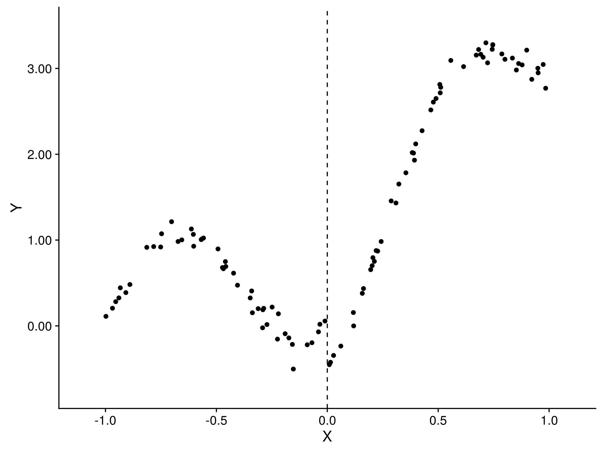
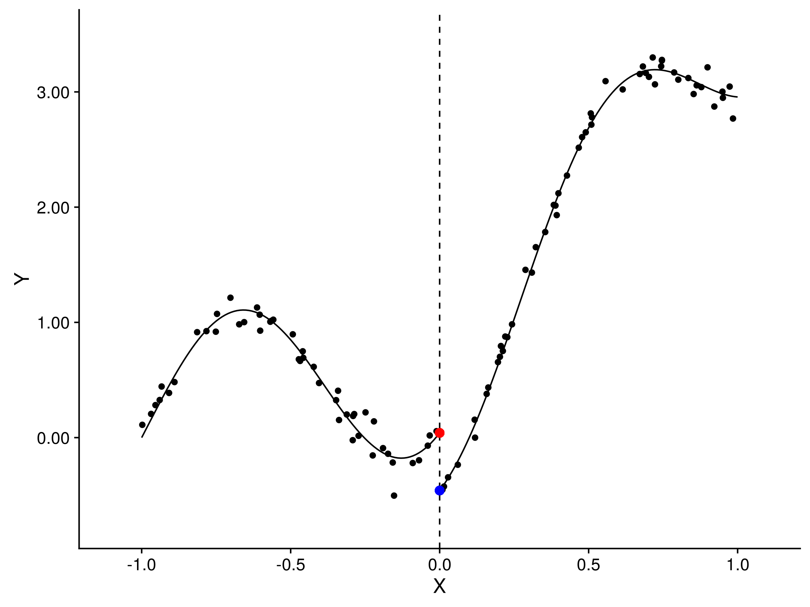
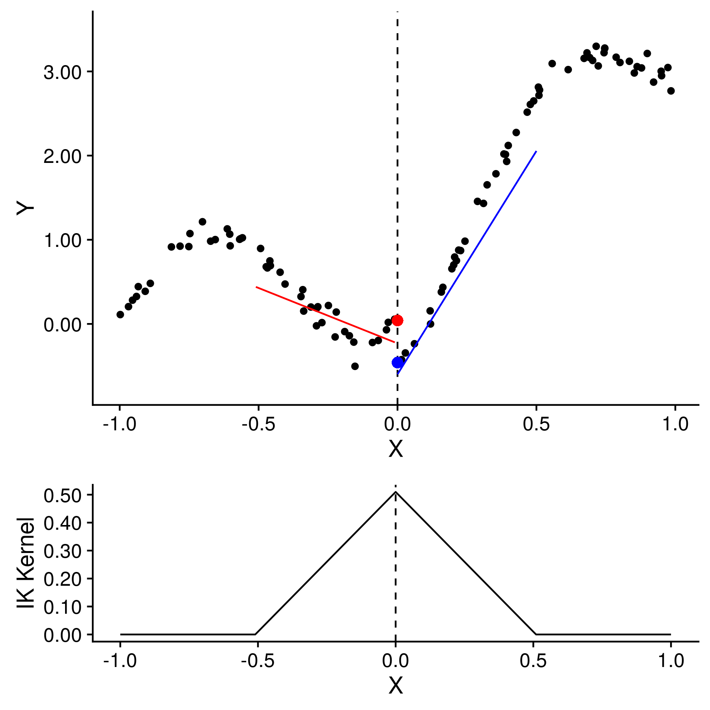
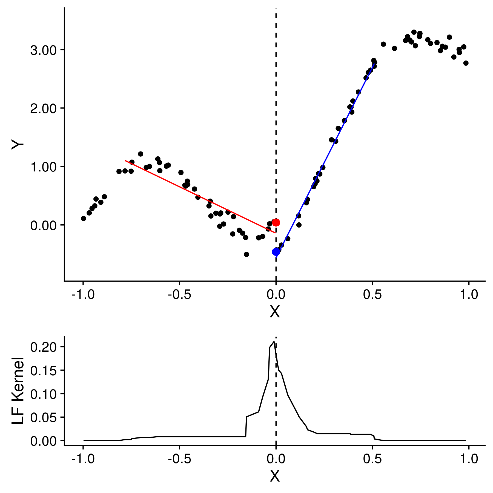
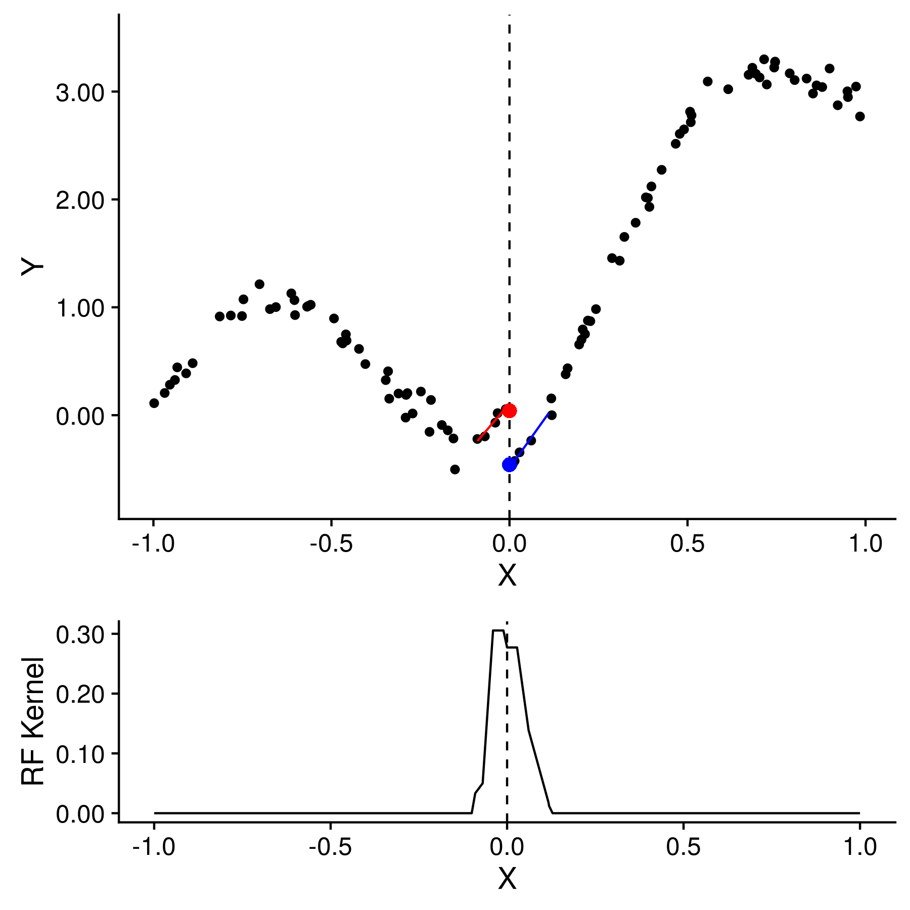

Nonparametric Regression Discontinuity Estimation with Random Forest Kernels
Michael Jerman
Department of Economics
University of Oregon
October 19, 2017
### Introduction
- Regression discontinuity (RD) is an increasingly common tool in applied econometrics
- Many competing implementation methods (parametric and nonparametric)
- Results often sensitive to bandwidth and kernel choices
- "Best" specifications generally determined heuristically
- I develop a data-driven, adaptive kernels based on the "random forest" algorithm
- Kernel and bandwidth determined simultaneously, with minimal input from the researcher
### RD Methods
- When outcome variable is nonlinear in running variable, RD is usually estimated with "local linear" regression
- Run OLS on a subset of the data "near" the cutoff, and weigh observations closer to the cutoff more heavily
- Kernels are almost always triangular or rectangular (triangle is asymptotically optimal)
- Bandwidth chosen by cross-validation, Imbens-Kalyanaraman (IK), or simply looking at the data
Discontinuity Example

Discontinuity Example

### Random Forest (RF) and Random Linear Forest (RLF) Kernels
- Recursively partition data into intervals by mean (RF) or linear relationship (RLF)
- Create partitions for *B* bootstraps
- The kernel around each *x* is the sum of every bootstrapped interval that *x* belongs to
- Estimate a linear model, using kernels as weights
- RF kernel assigns more weight to observations near each other in $y$ space (similar to cross-validation)
- RLF kernel assigns more weight to observations along the same linear segment
Triangle Kernel, IK Bandwidth

Random Linear Forest Kernel and Bandwidth

Random Forest Kernel and Bandwidth

### Simulations
- Sample size of $N = 100$, $x$ drawn from uniform distribution
- $\epsilon \sim N(0, 0.2^2)$
- 500 Monte Carlo repetitions
- Relative efficiency: $\dfrac{MSE\_{1}}{MSE\_{2}}$
- Three models
### Future Work
- Multidimensional kernels
- Compare quadratic RLF to local-quadratic methods
- Compare to "bias corrected" RD
- Bayesian regression trees: include prior information in a robust way
- Random polynomial trees